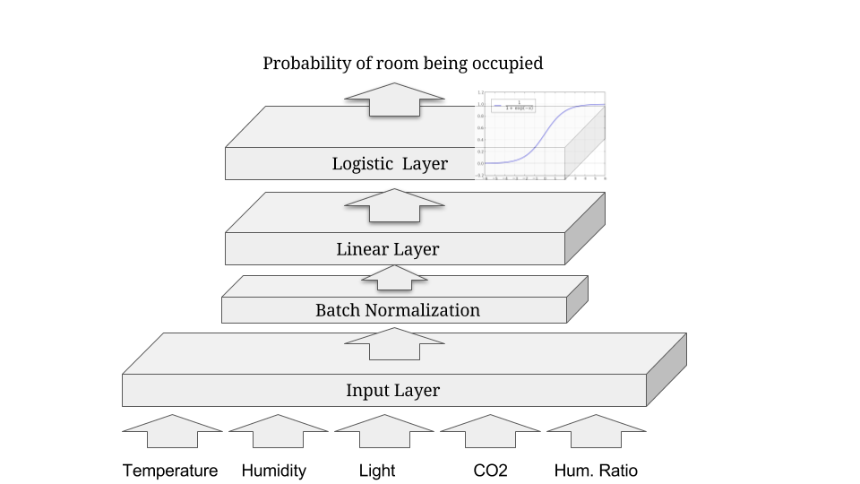

Deep learning with Cortex
Kiran Karkera
Datacraft Sciences
Outline
Context: Clojure, Cortex, Machine Learning
Overview of Cortex
Example of building networks
Recipes
Context
Machine learning/data science is an overloaded term

Estimation vs Prediction
Estimation: coming up with values of unknown parameters (in a model)
Prediction: focused on accuracy (and other metrics) of model.
Research vs production use
Exploration (given a dataset, train a classifier, produce a report)
Production (putting a trained model into a production environment)
Why use Clojure for Machine Learning?
Data-oriented functional programming with a focus on composable sequence processing
Excellent tooling for REPL-driven development
Interop with Java, Scala and Javascript
Smooth transition from research to production

| Library | Niche |
| Gorilla-repl | Notebooks/visualization |
| Storm | Stream processing |
| Onyx | Stream Processing |
| Sparkling/Flambo | Distributed jobs on Spark |
| Datomic | Supports "time travel" over database history |
What is Machine Learning
Supervised Classification:

Why are Neural Networks popular for classification?
State of the art performance
One of the early successes(1992) for neural nets was reading the zip code in postal mail.

99.81% accuracy on MNIST, close to or better than human performance
Flexibility
Neural Nets can accommodate several outputs:
Single target classification (e.g. Spam classification)
Multi target classification (e.g multiple objects in an image)
Classifying aspects of human faces such as gender, age, type of expression and skin colour

Composable abstractions
Different layers can be combined in a modular fashion and computations are straightforward

Figure 6: im2txt network provides descriptions of images
Features of Cortex
Deep learning library written in Clojure
Data centric interface
Performant, Memory efficient training on GPUs
Supports Convolutional NNs (image processing)
Partial support for ingesting pre-trained networks
Abstraction layers for CUDA / CPU
- Enables some level of shared implementation between a Cpu, Cuda, OpenCL
Cortex Examples
Predicting office room occupancy

Train with 8k instances from room occupancy dataset
Contains measurements of light, temperature, humidity and CO2 of an office room.
Goal is to predict when the room is occupied.

Data ingestion
(def data-vectors (->> "resources/occupancy/datatraining.csv" (slurp) ;; parse lines )) (take 2 data-vectors)
([23.18 27.272 426.0 721.25 0.00479298817650529 1.0] [23.15 27.2675 429.5 714.0 0.00478344094931065 1.0])
Create training data format
(defn make-feature-vec [data-vectors] (->> data-vectors (mapv (fn[m] {:data (-> m butlast vec) :labels (-> m last vector)})))) (->> (make-feature-vec data-vectors) (take 2))
({:data [22.15 27.245 0.0 586.5 0.0044959713579516], :labels [0.0]} {:data [20.89 23.445 0.0 450.5 0.00357640828064061], :labels [1.0]})
Split the data into train and test
Define the layers
Network is defined as a vector of layers
Input layer take 3 arguments, the x y z dimensions of the input cube
Specify the input against the :id key
;;input layer for room occupancy is 5(inputs) x 1 x 1 (layers/input 5 1 1 :id :data)
;;data instance {:data [22.15 27.245 0.0 586.5 0.0044959713579516], :labels [0.0]}
Network definition
(def description [(layers/input 5 1 1 :id :data) (layers/batch-normalization) (layers/linear 1) (layers/logistic :id :labels)])

Training
Train it for 10 epochs
One epoch == One pass on the dataset
(def trained-occupancy-net (let [[train-ds test-ds] train-test-ds] (train-n description train-ds test-ds ;;run for 10 training epochs :epoch-count 10 )))
| :type | :value | :lambda | :node-id | :argument | |-----------+---------------------+---------+----------+-----------| | :mse-loss | 0.03046061750823965 | 1.0 | :labels | | Loss for epoch 10: (current) 0.03046062 (best) 0.03308501 [new best]
Evaluate results
Evaluate the accuracy (and other metrics) on the test set
[(accuracy actual predicted) (f1-score actual predicted 1.0)]
[0.9447852760736196 0.8888888888888891]
Recognizing hand-written digits

Image of size 28 (length) x 28 (breadth) x 3 (depth)
Network definition
;;input layer for an image of size 28 (length) x 28 (breadth) x 3 (depth) (layers/input 28 28 3 :id :data)
(defn mnist-initial-description [input-w input-h num-classes] [(layers/input input-w input-h 1 :id :data) (layers/convolutional 5 0 1 20) (layers/max-pooling 2 0 2) (layers/relu) (layers/convolutional 5 0 1 50) (layers/max-pooling 2 0 2) (layers/batch-normalization) (layers/linear 1000) (layers/relu :center-loss {:label-indexes {:stream :labels} :label-inverse-counts {:stream :labels} :labels {:stream :labels} :alpha 0.9 :lambda 1e-4}) (layers/dropout 0.5) (layers/linear num-classes) (layers/softmax :id :labels)])
Training progress


Backpropagation

Artifacts
Forward pass
Backward pass
Accuracy / Loss function
Gradient
How to train neural networks (theory)
(Learn by) writing a toy implementation of back propagation
Stack up layers like Lego blocks
Sip your coffee and watch the loss function decrease

Reality
" The problem with Backpropagation is that it is a leaky abstraction." -Andrej Karpathy

Figure 17: A heart rate or a loss function? :)

Figure 18: Evades diagnosis
Check out this page for artistic loss functions

Debug-ability is key
Swanky UIs are common
Swanky REPL are surprisingly rare
“Any Product That Needs a Manual to Work Is Broken” – Elon Musk
Neural nets and functional programming
Pure functions
(layer inputs)
Reduce
(reduce (fn[last-output layer] (layer last-output)) input [layer1 layer2 layer3])
Iterate
(iterate train-fn initial-network)
REPL driven development
Querying network properties (a.k.a ->)
What are the layers in the network
(-> occupancy-net :compute-graph :nodes keys) ;; ;;(:data :batch-normalization-1 :linear-1 :labels :mse-loss-1)
How are layers connected
(-> occupancy-net :compute-graph :edges) ;; ;;([:data :batch-normalization-1] ;; [:batch-normalization-1 :linear-1] ;; [:linear-1 :labels] ;; [:labels :mse-loss-1])
Examine weights per layer
(defn mnist-initial-description [input-w input-h num-classes] [(layers/input input-w input-h 1 :id :data) (layers/convolutional 5 0 1 20) (layers/max-pooling 2 0 2) (layers/relu) (layers/convolutional 5 0 1 50) (layers/max-pooling 2 0 2) (layers/batch-normalization) (layers/linear 1000) (layers/relu :center-loss {:label-indexes {:stream :labels} :label-inverse-counts {:stream :labels} :labels {:stream :labels} :alpha 0.9 :lambda 1e-4}) (layers/dropout 0.5) (layers/linear num-classes) (layers/softmax :id :labels)]) ;;create the network to accept 28 x 28 pixel inputs, ;;10 targets/labels (one each for digits 0-9) (def mnist (mnist-initial-description 28 28 10)) (network/print-layer-summary mnist-net (traverse/training-traversal mnist-net))
Part 2
| type | input | output | :bias | :weights |
|---|---|---|---|---|
| :linear | 50x4x4 - 800 | 1x1x1000 - 1000 | [1000] | [1000 800] |
| :relu | 1x1x1000 - 1000 | 1x1x1000 - 1000 | ||
| :dropout | 1x1x1000 - 1000 | 1x1x1000 - 1000 | ||
| :linear | 1x1x1000 - 1000 | 1x1x10 - 10 | [10] | [10 1000] |
| :softmax | 1x1x10 - 10 | 1x1x10 - 10 |
Parameter count: 849780

Visualize the output of a hidden layer (a.k.a dissoc)
Exploring the Swish activation function
Remove the penultimate layer (labels) and pass a range of inputs
(-> network :compute-graph :nodes keys) ;;(:data :batch-normalization-1 :linear-1 :labels :mse-loss-1)
(execute/run (network/dissoc-layers-from-network network :labels) input-data)
Compare Swish with Tanh and Logistic layers

Training (a.k.a iterate)
Train and test datasets are infinite sequences
(def trained-net (let [[train-ds test-ds] (get-ds) train-fn #(etrain/train-n % train-ds test-ds)] (->> network (iterate train-fn) (take 10))))
Returns a sequence with 10 iterations of trained network
(->> trained-net (mapv :cv-loss)) ;; ;;[nil 2.2406814049004633 ;; 2.1851172560486454 2.1851172560486454 ;; 2.1851172560486454 2.1822464148167136 ;; 2.1734111466403503 2.1614423794394315 ;; 2.1614423794394315 2.1614423794394315]
Check how weights change over epochs
(-> network :compute-graph :buffers :convolutional-2-weights-1 :buffer)

Figure 22: Convolution layer weights
Listeners
To watch progress of the loss function
Save the best model/kill training
Observe images/instances being classified
Summary
What Cortex needs contributions on
Support for Recurrent networks (e.g. text)
Java based alternative is Deeplearning4j
Recent network structures (e.g. Inception / Capsule networks).
Ingesting pre-trained networks
Automatic differentiation
Thanks
Chris Nuernberger and the Thinktopic team
Mike Anderson
References
- Clojure Data Science.com
- Office occupancy picture (
 )
)